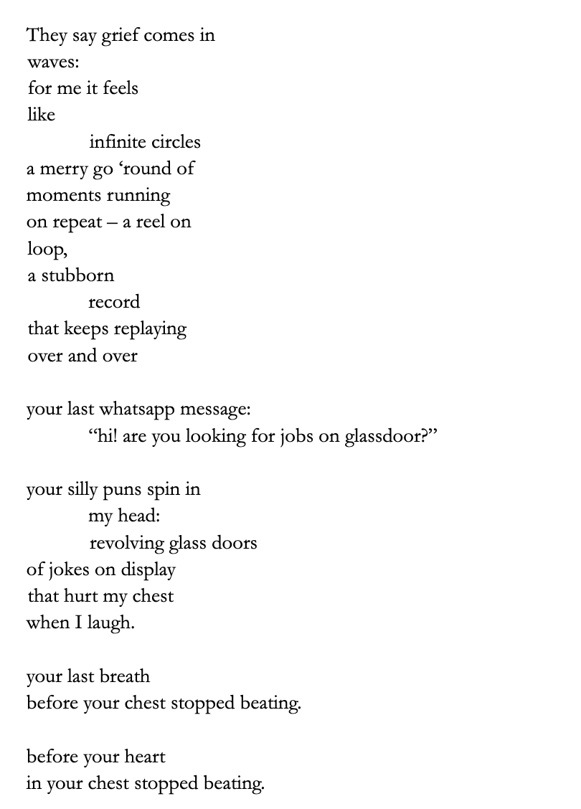

Enso
These pieces, accompanying the poem Enso, are the result of human-AI collaboration. The images are generated by Midjourney based on my own artwork from my journal: I first fed the image to Midjourney to attempt to describe it as a prompt for itself, and then generated additional illustrations based on modifying that prompt. Where does the boundary sharpen or blur between human-created and AI-generated work?


click on the image